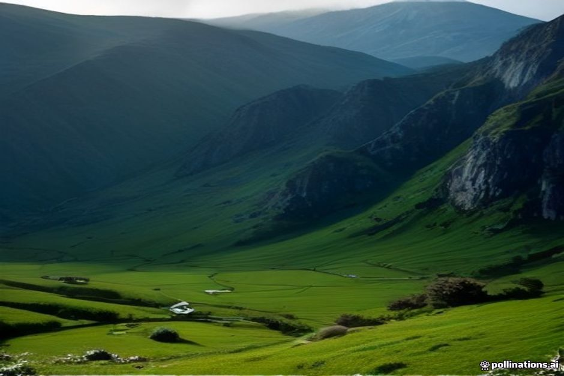
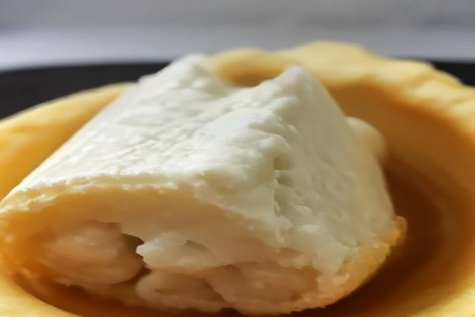

À côté de la poncha et du bolo do caco, la queijada da Madeira est rarement mentionnée en dehors de l'île — ce qui est dommage, car c'est l'une des plus anciennes douceurs encore fabriquées ici. Voici ce qu'elle est vraiment, ce qui la distingue de la version de Sintra que la plupart des visiteurs connaissent déjà, et où en trouver une qui vaille le détour.
Qu'est-ce que la queijada da Madeira ?
C'est une petite pâtisserie plate et cuite au four — environ 7 à 8 cm de diamètre et à peu près un centimètre d'épaisseur — faite d'une fine pâte repliée sans serrer autour d'une garniture de caillé frais de lait de chèvre, de sucre et d'œufs. La pâte elle-même est simple : farine, beurre, sucre et eau, étalée finement pour que la garniture reste la vedette. À la dégustation, la texture est moelleuse et légèrement granuleuse plutôt que lisse, avec une pointe d'acidité du fromage de chèvre qui l'empêche de tourner à la simple tarte au sucre. On la mange traditionnellement en deux ou trois bouchées, debout au comptoir d'une pastelaria avec un café, et non à l'assiette avec une fourchette.

Qu'y a-t-il vraiment dans la garniture ?
Du caillé frais de lait de chèvre, obtenu en faisant cailler le lait sans le laisser affiner, mélangé à du sucre, des œufs et un peu de farine pour le lier avant la cuisson. Ce caillé est tout l'enjeu : c'est ce qui distingue la queijada da Madeira de presque toutes les autres pâtisseries portugaises portant le même nom. Les boulangers replient les bords de la pâte à la main par-dessus la garniture plutôt que de la presser dans un moule fixe, ce qui explique pourquoi deux queijadas ne se ressemblent jamais tout à fait : une forme légèrement irrégulière, finie à la main, fait partie de ce qui distingue une vraie queijada d'une copie industrielle.
En quoi diffère-t-elle des queijadas de Sintra ou de la version des Açores ?
Elles partagent un nom et une même origine dans la pâtisserie conventuelle, mais la ressemblance s'arrête à peu près là. Les queijadas de Sintra, la version que la plupart des visiteurs du Portugal continental connaissent déjà, utilisent un fromage de lait de vache avec de la cannelle dans une croûte plus feuilletée et plus beurrée. La queijada des Açores se passe entièrement de coque pâtissière, la crème étant cuite directement dans un petit moule en papier ou en fer-blanc. La version de Madère se situe entre les deux : une pâte simple, sans cannelle, et une garniture nettement plus acidulée grâce au caillé de lait de chèvre. Un manuscrit du couvent de l'Incarnation de Funchal, publié dans les Archives historiques de l'île en 1937, fait remonter la recette à cette même tradition confiseuse monastique qui a donné naissance à la plupart des grandes douceurs du Portugal — ce qui explique comment un seul nom de pâtisserie a fini par désigner trois choses réellement différentes selon les régions du pays.
Où peut-on goûter une queijada da Madeira authentique ?
Les pastelarias de Funchal en proposent, et vous trouverez aussi des étals qui en vendent au Mercado dos Lavradores, aux côtés des marchandes de fleurs et des étals de fruits. Mais les plus fraîches viennent en général des petites boulangeries de quartier plutôt que des cafés tournés vers les touristes sur les places principales — n'hésitez pas à demander dans le village que vous traversez, car le fromage de chèvre est encore fabriqué à domicile dans plusieurs paroisses rurales de Madère. Elles se conservent bien un jour ou deux, ce qui en fait quelque chose de facile à emporter avant de redescendre vers la marina.
Que boire avec ?
Un petit verre de vin de Madère — un Bual mi-doux fonctionne particulièrement bien — se marie agréablement avec l'acidité du fromage, et il tient aussi tête à une poncha ou à un espresso serré, la façon dont la plupart des habitants la consomment. Nous gardons à bord un assortiment similaire d'en-cas et de boissons locales pendant notre Day Trip et Sunset Trip, donc si la queijada ne figure pas à votre programme à terre, il y a généralement quelque chose de proche en esprit qui vous attend sur le bateau.
Elle ne cherche pas à vous impressionner. Elle est simplement préparée de la même façon depuis très longtemps.
La queijada da Madeira ne figurera pas sur beaucoup de listes de souvenirs, et c'est justement une partie de son charme : c'est une pâtisserie que les Madériens mangent réellement, pas une pâtisserie pensée pour les visiteurs. Si vous en repérez une en vitrine d'une boulangerie, cela vaut le détour.
